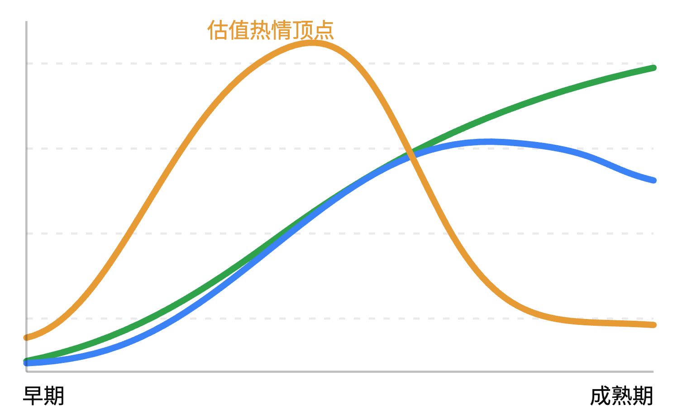

A 股定价热情难以持久
产业趋势可以持续很多年，但 A 股资本市场对这个产业的定价热情，基本无法维持很久。
股民的修为提升的很大一点在于：从研究 “什么公司值得买”，开始转向研究 “什么价格值得买，以及为什么市场会给我这个价格”。
1. A 股最容易让人犯错的，是把产业确定性和买入紧迫性混为一谈
以 2021 年宁德时代为例。
当时新能源汽车产业趋势确实非常明确，宁德时代的龙头地位也并非虚构。后来利润增长证明了很多产业判断。
但投资者容易从：“未来五年宁德时代利润可能增长数倍”。直接跳到：“所以现在必须买入，否则就错过机会”。
中间缺少一个非常重要的步骤：未来五年的利润增长，有多少已经反映在今天的市值里？
产业逻辑越容易形成共识，越可能出现未来增长被提前定价的情况。
2. 耐心等待，本质上是在利用其他市场参与者的约束
这与你之前研究 A 股不同博弈主体的思路是连贯的。
公募基金面临业绩排名、资金申赎和持仓约束；趋势资金依赖价格动量；杠杆投资者面临保证金压力；部分量化策略也可能在波动放大时降低风险敞口。
这些主体即使认可一家企业的长期价值，也可能因为自身约束而卖出。
个人投资者的一项潜在优势恰恰是：没有必须每个季度交出相对收益的压力，也没有必须满仓的制度约束。
当别人不得不卖时，你可以选择买；当别人都在追逐同一个产业时，你可以选择等待。
当然，前提是你的资金没有短期使用需求，并且你没有把现金全部投入上一轮下跌。
3. 值得建立的是一种反 FOMO 的决策机制
例如，对于自己真正长期看好的企业，可以事先规定：
| 条件 | 行动原则 |
|---|---|
| 产业逻辑成立，估值明显偏贵 | 跟踪，不因上涨追仓 |
| 产业逻辑成立，估值合理 | 建立或维持基础仓位 |
| 产业逻辑成立，估值明显低估 | 考虑增加仓位 |
| 产业逻辑被证伪 | 重新评估，不因价格便宜继续补仓 |
这里最重要的是 把估值判断和仓位决策提前制定，尽量减少当天股价波动对决策的影响。
而且你完全可以持有基础仓位，同时保留一定现金等待更好的价格。这样既不会因为完全踏空而焦虑，也不会在真正出现大幅回撤时失去行动能力。
好公司稀缺，不代表好价格同样稀缺。在一个存在明显流动性冲击、风格轮动和投资者行为约束的市场里，优秀企业也可能反复出现不合理的低价。
当然，没有任何保证说这种机会一定会出现。
我认为你从这段历史中真正获得的，不是“以后一定要等暴跌”，而是认识到：错过一次上涨的损失是机会成本；以过高估值买入后经历多年估值消化，则可能是真实的时间成本和资本成本。
对于希望通过资本积累逐渐减少对工资依赖的人而言，后者尤其值得重视。
你现在可以把“耐心”理解成一种主动使用的投资优势，而不是被迫空仓等待。
产业周期、盈利周期、估值周期并不同步

一个产业可能持续增长十年，企业利润持续增长五六年，但市场给予它的最高估值，可能在产业发展的前三年就出现了。
因为股价 交易的是未来增长相对于当前预期的变化，而不是产业本身是否仍在增长。
2021 年新能源就是很好的例子：2022—2023 年宁德时代的利润继续增长，但估值已经开始收缩。
拥堵交易内生脆弱性
产业前景改善 → 盈利预期上修
↓
机构增配、趋势资金追涨、PE 扩张
↓
持仓拥挤，估值包含大量乐观预期
↓
增长略低于预期 / 流动性收紧 / 风格切换
↓
边际买盘减少，部分资金被迫或主动卖出
↓
股价下跌 → 风控减仓 → PE 进一步压缩并不需要所有投资者同时改变对产业的长期判断，只需要边际买盘不足以承接卖盘，股价就会下跌。而且，持仓拥挤本身会改变参与者的行为约束：
- 公募基金面临净值回撤和赎回压力。
- 趋势资金在价格趋势反转后撤离。
- 杠杆资金在波动上升时被迫降低仓位。
- 主动机构可能为了控制组合风险而减仓。
- 量化策略可能根据自身信号放大或缓和波动，并非必然单向卖出。
这就是为什么高估值、高共识和高拥挤度叠加时，市场可能对并不严重的坏消息产生剧烈反应。